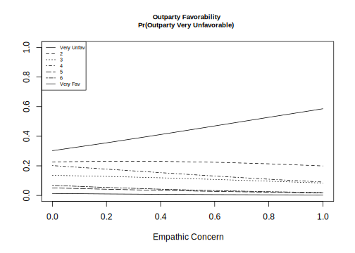

8.6 Week 6 Tutorial
For this example, we will replicate a portion of the article”How Empathic Concern Fuels Partisan Polarization” by Elizabeth N. Simas, Scott Clifford, and Justin H. Kirkland.published in 2020 in the American Political Science Review. Replication files are available here
Abstract. Over the past two decades, there has been a marked increase in partisan social polarization, leaving scholars in search of solutions to partisan conflict. The psychology of intergroup relations identifies empathy as one of the key mechanisms that reduces intergroup conflict, and some have suggested that a lack of empathy has contributed to partisan polarization. Yet, empathy may not always live up to this promise. We argue that, in practice, the experience of empathy is biased toward one’s ingroup and can actually exacerbate political polarization. First, using a large, national sample, we demonstrate that higher levels of dispositional empathic concern are associated with higher levels of affective polarization. Second, using an experimental design, we show that individuals high in empathic concern show greater partisan bias in evaluating contentious political events. Taken together, our results suggest that, contrary to popular views, higher levels of dispositional empathy actually facilitate partisan polarization.
We are going to replicate Study 1’s analysis testing Hypotheses 1 and 2. Here, the authors conduct an original survey fielded by YouGov during May 2016 with 1000 respondents.
Let’s load the data.
- How many observations do we have?
library(foreign)
emp <- read.dta("https://github.com/ktmccabe/teachingdata/blob/main/week6.dta?raw=true")The authors’ first two hypotheses are:
- Empathic concern should predict more positive affect for copartisans, relative to outpartisans (H1).
- Empathic concern should increase negative affect for outpartisans (H2).
Outcome Measure: “To examine this type of partisan favoritism, we utilize responses to two questions asking respondents to rate the Democratic and Republican Parties on a seven-point scale ranging from”very favorable” to “very unfavorable.” We then subtract respondents’ ratings of the opposite party from their ratings of their own party to create an ordinal measure that ranges from six (highest inparty rating, lowest outparty rating) to −6 (lowest inparty rating and highest outparty rating)”
affectpol: an ordinal measure that ranges from six (highest inparty rating, lowest outparty rating) to −6 (lowest inparty rating and highest outparty rating)”outfav: rating of opposing party on a seven-point scale ranging from “very favorable” to “very unfavorable.”
Let’s take a look at these variables.
- Are they coded as the authors describe?
- What class are they currently?
table(emp$affectpol)
-6 -4 -3 -2 -1 0 1 2 3 4 5 6
1 1 4 5 11 106 80 80 103 148 137 116 class(emp$affectpol)[1] "numeric"table(emp$outfav)
1 2 3 4 5 6 7
431 163 73 85 16 16 8 class(emp$outfav)[1] "numeric"Independent Variables.
empconc: Mean of empathetic concern items from the Interpersonal Reactivity Index (IRI)- Additional variables to measure other dimensions of empathy:
empdistpersonal distress,emppersperspective taking,empfantfantasy
- Additional controls for strength of party identification
pidext, ideological extremityideoext, news interestnews, dummy variable for party membershipdem, and demographics:educ,age,male,white,inc3miss(income)
What type of model could they use to test H1 and H2?
They choose to run an ordinal logistic regression. Let’s do as they do. To run an ordinal model in R, we need to make sure our outcome is ordinal! (meaning a factor variable)
emp$outfav <- as.factor(emp$outfav)
table(emp$outfav)
1 2 3 4 5 6 7
431 163 73 85 16 16 8 class(emp$outfav)[1] "factor"Go ahead and replicate the first regression in the table with all of the controls, making sure to treat income as a factor variable but education as a numeric variable.

- Note: your coefficients will not exactly match because the authors weight their data using survey weights.
library(MASS)
fit.emp <- polr(outfav ~ empconc + empdist + emppers + empfant +
+ pidext + ideoext + news + dem +
as.numeric(educ) + age + male + white + factor(inc3miss),
data=emp, Hess=T, method="logistic")
summary(fit.emp)Call:
polr(formula = outfav ~ empconc + empdist + emppers + empfant +
+pidext + ideoext + news + dem + as.numeric(educ) + age +
male + white + factor(inc3miss), data = emp, Hess = T, method = "logistic")
Coefficients:
Value Std. Error t value
empconc -0.805771 0.492455 -1.63623
empdist 0.321857 0.413656 0.77808
emppers 0.433013 0.528121 0.81991
empfant -0.020821 0.408769 -0.05093
pidext -0.246698 0.095193 -2.59155
ideoext -0.556725 0.072652 -7.66288
news -0.557133 0.094192 -5.91487
dem 0.002573 0.156964 0.01639
as.numeric(educ) 0.071461 0.054630 1.30809
age -0.004130 0.004784 -0.86345
male -0.310108 0.160583 -1.93114
white -0.015491 0.176718 -0.08766
factor(inc3miss)2 -0.049340 0.196223 -0.25145
factor(inc3miss)3 -0.127770 0.200626 -0.63686
factor(inc3miss)4 -0.148389 0.242841 -0.61105
Intercepts:
Value Std. Error t value
1|2 -3.4355 0.6385 -5.3808
2|3 -2.3032 0.6308 -3.6513
3|4 -1.5674 0.6259 -2.5042
4|5 -0.2119 0.6325 -0.3351
5|6 0.3713 0.6467 0.5741
6|7 1.5460 0.7177 2.1541
Residual Deviance: 1828.862
AIC: 1870.862
(245 observations deleted due to missingness)- Let’s take a look out how the weights affect the result by using the
surveypackage.- There are many options in establishing an
svydesign. Ours is a relatively simple case where all we have is a vector of weights. In other cases, samples might include information about the sampling units or strata. - Once we establish an
svydesignobject, we now need to usesvycommands for our operations, such assvymeanorsvyglmorsvyolr
- There are many options in establishing an
## install.packages("survey", dependencies =T)
library(survey)
empd <- svydesign(ids=~1, weights = emp$weight_group, data=emp)
fit.empw2 <- svyolr(outfav ~ empconc + empdist + emppers + empfant +
+ pidext + ideoext + news + dem +
as.numeric(educ) + age +
male + white + factor(inc3miss),
design=empd, method="logistic")
summary(fit.empw2)Call:
svyolr(outfav ~ empconc + empdist + emppers + empfant + +pidext +
ideoext + news + dem + as.numeric(educ) + age + male + white +
factor(inc3miss), design = empd, method = "logistic")
Coefficients:
Value Std. Error t value
empconc -1.4141333759 0.585070456 -2.4170309
empdist 0.7759996312 0.561768870 1.3813504
emppers 1.1700466598 0.672754809 1.7391874
empfant 0.9733692488 0.475484526 2.0471103
pidext -0.3281938237 0.124714241 -2.6315665
ideoext -0.4970353573 0.106530714 -4.6656531
news -0.5759629296 0.130609880 -4.4097960
dem -0.0456812052 0.195236242 -0.2339791
as.numeric(educ) 0.0284167135 0.065624317 0.4330211
age -0.0007305433 0.005493873 -0.1329742
male -0.1759866726 0.212493495 -0.8281979
white 0.0366164598 0.215144017 0.1701951
factor(inc3miss)2 -0.0470362687 0.226737718 -0.2074479
factor(inc3miss)3 -0.0794217660 0.246811912 -0.3217907
factor(inc3miss)4 -0.0588030650 0.330225820 -0.1780693
Intercepts:
Value Std. Error t value
1|2 -2.9118 0.9199 -3.1652
2|3 -1.7749 0.9029 -1.9658
3|4 -1.0853 0.9058 -1.1982
4|5 0.3080 0.8948 0.3442
5|6 0.9101 0.9006 1.0106
6|7 2.8740 0.9296 3.0918
(245 observations deleted due to missingness)The weights seem to make a difference! Now we are closely matching what the authors report. The use of survey weights represents yet another point of researcher discretion.
Let’s use the weighted results and proceed to make them easier to interpret. Recall, H2 was: Empathic concern should increase negative affect for outpartisans (H2).
We want to show how negative affect toward the outparty changes across levels of empathic concern. How should we visualize this?
- Could calculate probabilities of being in each of the
outfavseven categories across different levels of empathetic concern. - Could calculate probabilities of being in theoretically interesting
outfavcategories across different levels of empathetic concern.
Note: in each case, we need to decide where to set our covariate values and potentially also calculate uncertainty estimates.
What do they do? (focus on the right side for the out-party measure)

Let’s estimate the probability of being in the lowest category for empathy values from 0 to 1 by .2 intervals. Let’s set all covariates at their observed values.
- We could do this in
predictor manually. We will do it manually for now.
## Set covariates to particular values (here, we hold at observed)
X <- model.matrix(fit.empw2)
X <- X[, -1] #remove intercept
X[,"empconc" ] <- 0
# Find Xb and zeta
coef(fit.empw2) empconc empdist emppers empfant
-1.4141333759 0.7759996312 1.1700466598 0.9733692488
pidext ideoext news dem
-0.3281938237 -0.4970353573 -0.5759629296 -0.0456812052
as.numeric(educ) age male white
0.0284167135 -0.0007305433 -0.1759866726 0.0366164598
factor(inc3miss)2 factor(inc3miss)3 factor(inc3miss)4 1|2
-0.0470362687 -0.0794217660 -0.0588030650 -2.9118275702
2|3 3|4 4|5 5|6
-1.7749101884 -1.0852947154 0.3080104278 0.9101173775
6|7
2.8740344326 # this piece [1:ncol(X)] makes sure we omit the zetas
# this is only necessary for svyolr. The polr function already omits zetas from coef()
b <- coef(fit.empw2)[1:ncol(X)]
eta <- X %*% b
zeta <- fit.empw2$zeta
## Find Pr(lowest category)
emp0 <- mean(plogis(zeta[1] - eta))
emp0[1] 0.3025648## Repeat for each value of empconc of interest
X[,"empconc"] <- .2
# Find Xb and zeta
eta <- X %*% coef(fit.empw2)[1:ncol(X)]
zeta <- fit.empw2$zeta
## Find Pr(lowest category)
emp2 <- mean(plogis(zeta[1] - eta))
emp2[1] 0.3555723## Or put it in a function to be faster
findpr <- function(val){
X[,"empconc"] <- val
# Find Xb and zeta
eta <- X %*% coef(fit.empw2)[1:ncol(X)]
zeta <- fit.empw2$zeta
## Find Pr(lowest category)
pr <- mean(plogis(zeta[1] - eta))
return(pr)
}
## Does it work? Test
findpr(0)[1] 0.3025648## Repeat for all values of empathy
emp.prs <- sapply(seq(0, 1, .2), findpr)
emp.prs[1] 0.3025648 0.3555723 0.4116936 0.4696702 0.5281235 0.5856687We can visualize these estimates similar to the authors.
plot(x=seq(0, 1, .2),
y=emp.prs,
ylim = c(.1, .7),
type="l",
xlab = "Empathic Concern",
ylab = "",
main = "Outparty Favorability \n Pr(Outparty Very Unfavorable)",
cex.main=.8)We could add lines for all categories. We’ll just add it to the function for now.
findprall <- function(val){
X[,"empconc"] <- val
# Find Xb and zeta
eta <- X %*% coef(fit.empw2)[1:ncol(X)]
zeta <- fit.empw2$zeta
## Find Pr(7th lowest category)
pr7 <- mean(1 - plogis(zeta[6] - eta))
## Find Pr(6th lowest category)
pr6 <- mean(plogis(zeta[6] - eta) - plogis(zeta[5] - eta))
## Find Pr(5th lowest category)
pr5 <- mean(plogis(zeta[5] - eta) - plogis(zeta[4] - eta))
## Find Pr(4th lowest category)
pr4 <- mean(plogis(zeta[4] - eta) - plogis(zeta[3] - eta))
## Find Pr(3rd lowest category)
pr3 <- mean(plogis(zeta[3] - eta) - plogis(zeta[2] - eta))
## Find Pr(2nd lowest category)
pr2 <- mean(plogis(zeta[2] - eta) - plogis(zeta[1] - eta))
## Find Pr(lowest category)
pr1 <- mean(plogis(zeta[1] - eta))
return(c(pr1, pr2, pr3, pr4, pr5, pr6, pr7))
}
## Repeat for all values of empathy
emp.prsall <- sapply(seq(0, 1, .2), findprall)A note on the survey weights:
- When we take the
mean()of our estimates for each observation, we are treating each row of our \(X\) matrix as if it should have equal weight in this mean. This is normally fine, but with weighted data, we might instead want to weight the mean, according to the survey weights we used in our regression. The functionweighted.meancan facilitate this. Either approach is valid, but you may want to remember this distinction and the possibility that you could even incorporate the survey weights at this final stage.
We can add these lines to the plot. Yikes! A bit messy. You can see why they focus on the first category only.
plot(x=seq(0, 1, .2),
y=emp.prsall[1,],
ylim = c(0, 1),
type="l",
xlab = "Empathic Concern",
ylab = "",
main = "Outparty Favorability \n Pr(Outparty Very Unfavorable)",
cex.main=.8)
points(x=seq(0, 1, .2), y=emp.prsall[2,], type="l", lty=2)
points(x=seq(0, 1, .2), y=emp.prsall[3,], type="l", lty=3)
points(x=seq(0, 1, .2), y=emp.prsall[4,], type="l", lty=4)
points(x=seq(0, 1, .2), y=emp.prsall[5,], type="l", lty=5)
points(x=seq(0, 1, .2), y=emp.prsall[6,], type="l", lty=6)
points(x=seq(0, 1, .2), y=emp.prsall[7,], type="l", lty=7)
legend("topleft", lty=1:7, c("Very Unfav", "2", "3", "4", "5", "6", "Very Fav"), cex=.6)
A last step would be to calculate uncertainty. Just like before, we could use simulation or the bootstrap method. In the bootstrap method, the manual calculations would be the “meat” of the bootstrap function that you used in the previous course notes section.
A special note: The svyolr function does not appear compatible with the prediction function. As an alternative, we could fit the polr model with an extra argument for weights. These should produce the same coefficient estimates, though the standard errors might be incorrect. You could potentially use this to generate the raw probability estimates. See for example, estimates for being in category 1 below:
fit.emp2 <- polr(outfav ~ empconc + empdist + emppers + empfant +
+ pidext + ideoext + news + dem +
as.numeric(educ) + age + male + white + factor(inc3miss),
data=emp, Hess=T, method="logistic", weights = emp$weight_group)Warning in eval(family$initialize): non-integer #successes in a binomial glm!summary(fit.emp2)Call:
polr(formula = outfav ~ empconc + empdist + emppers + empfant +
+pidext + ideoext + news + dem + as.numeric(educ) + age +
male + white + factor(inc3miss), data = emp, weights = emp$weight_group,
Hess = T, method = "logistic")
Coefficients:
Value Std. Error t value
empconc -1.4141936 0.479987 -2.9463
empdist 0.7759968 0.412555 1.8810
emppers 1.1700975 0.527905 2.2165
empfant 0.9733691 0.406788 2.3928
pidext -0.3281915 0.097894 -3.3525
ideoext -0.4970277 0.078991 -6.2922
news -0.5759557 0.094099 -6.1207
dem -0.0456691 0.161136 -0.2834
as.numeric(educ) 0.0284158 0.056125 0.5063
age -0.0007309 0.004667 -0.1566
male -0.1759908 0.164116 -1.0724
white 0.0366286 0.168809 0.2170
factor(inc3miss)2 -0.0470201 0.205414 -0.2289
factor(inc3miss)3 -0.0794134 0.207121 -0.3834
factor(inc3miss)4 -0.0587784 0.233469 -0.2518
Intercepts:
Value Std. Error t value
1|2 -2.9118 0.6315 -4.6109
2|3 -1.7749 0.6251 -2.8394
3|4 -1.0853 0.6211 -1.7473
4|5 0.3080 0.6257 0.4923
5|6 0.9101 0.6363 1.4303
6|7 2.8741 0.7763 3.7022
Residual Deviance: 1862.152
AIC: 1904.152
(245 observations deleted due to missingness)preds <- prediction(fit.emp2, at=list(empconc = seq(0,1,.2)), category=1)Warning in check_values(data, at): A 'at' value for 'empconc' is outside
observed data range (0.0357142873108387,1)!round(summary(preds), digits=3) at(empconc) Prediction SE z p lower upper
0.0 0.303 NA NA NA NA NA
0.2 0.356 NA NA NA NA NA
0.4 0.412 NA NA NA NA NA
0.6 0.470 NA NA NA NA NA
0.8 0.528 NA NA NA NA NA
1.0 0.586 NA NA NA NA NA## Compare with the manual approach
round(emp.prsall[1,], digits=3) # category 1[1] 0.303 0.356 0.412 0.470 0.528 0.586